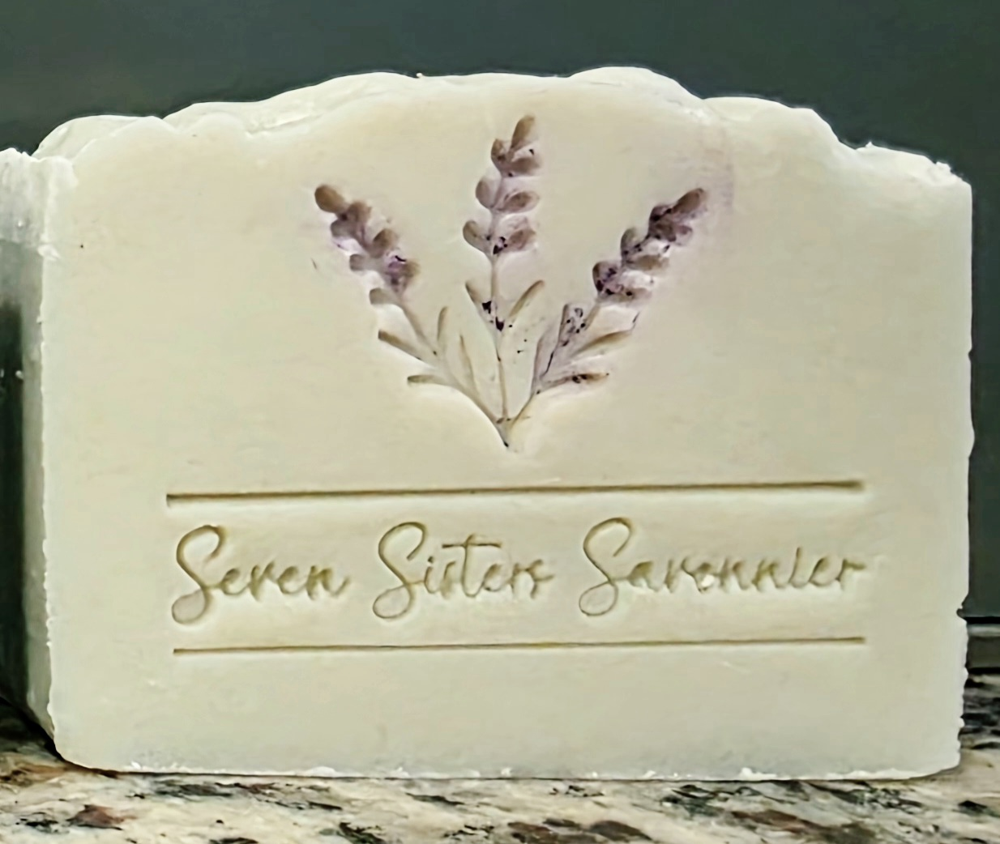
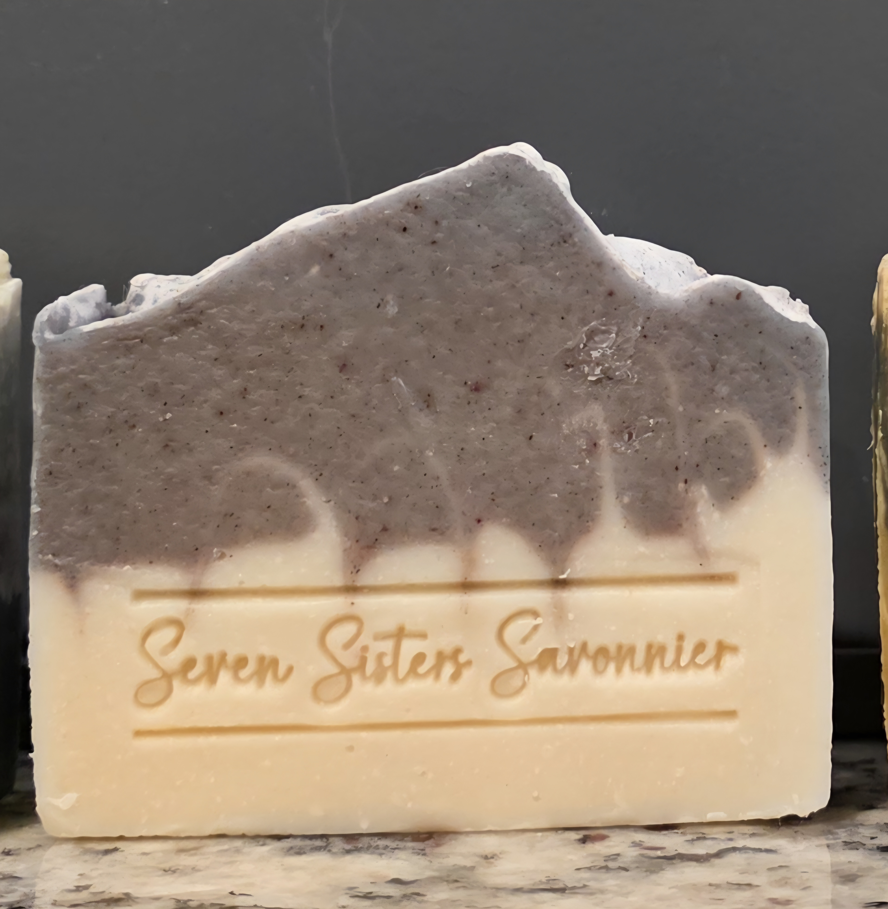
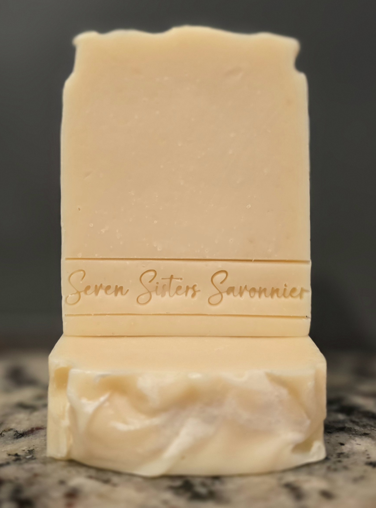

Lavender in several different moods, from fresh and herbal to soft and floral. Each bar offers its own interpretation of one of nature’s most beloved fragrances.

Soft • Serene • Dreamy
Inspired by the quiet beauty of the French countryside, Lavender Haze is a soothing, classic bar with a soft, romantic character. Goat milk and kaolin clay complement our traditional base oils to create a creamy, luxurious lather, while indigo-infused olive oil and a touch of mineral color give each bar its softly muted, sage-toned hue. Three delicate lavender stems, hand-stamped and lightly accented in a deep lavender color, complete its botanical character. The fragrance begins with classic French lavender, softened by floral rose geranium and enhanced with warm, woody cedarwood. The result is more nuanced than lavender alone—calming and floral, yet earthy enough to feel beautifully balanced.
Ingredients: Olive Oil (including indigo infused), Coconut Oil, Lard, Goat Milk, Sodium Hydroxide, Water, Essential Oils for Fragrance (Lavender, Rose Geranium, Cedarwood), Kaolin Clay, Ultramarines Blue, Sea Salt.
$10.00

Quiet • Earthy • Serene
Based on the hushed beauty of an early morning wrapped in mist, Misty Morning pairs a natural creamy base with a softly mottled lavender-gray sky. Trusted botanicals Indigo and madder root create the muted color, while a gentle swirl allows the two layers to drift into one another like morning fog settling over the landscape. Goat milk and kaolin clay complement our signature base oils to create a creamy, luxurious lather with a smooth, silky feel. The fragrance begins with classic French lavender, softened by floral rose geranium and grounded with warm, woody cedarwood. Calming and floral with an earthy undertone, the blend perfectly suits the quiet, misty character of an Acadian morning.
Ingredients: Olive Oil, Coconut Oil, Lard, Goat Milk, Sodium Hydroxide, Water, Essential Oils (Lavender, Geranium, Cedarwood), Kaolin Clay, Sea Salt, Indigo Powder, Madder Root Powder.
$10.00

Simple • Creamy • Beautifully understated
Made with 88% olive oil, our Creamy Castile with Lavender is a beautifully simple goat milk soap inspired by the tradition of classic Castile soap. Rich in olive oil and creamy goat milk, this bar produces a soft, luxurious lather. A delicate touch of lavender and rose geranium essential oils adds just a whisper of floral fragrance without overwhelming the senses. With no added colorants or artificial fragrances, its natural, creamy appearance reflects the simplicity of its ingredients.
Ingredients: Olive Oil, Water, Sodium Hydroxide, Goat Milk, Coconut Oil, Essential Oils (Lavender, Rose Geranium).
$10.00